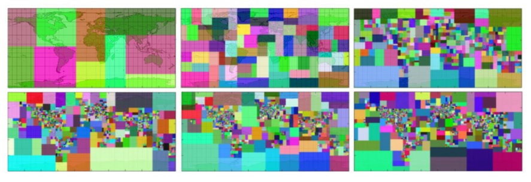
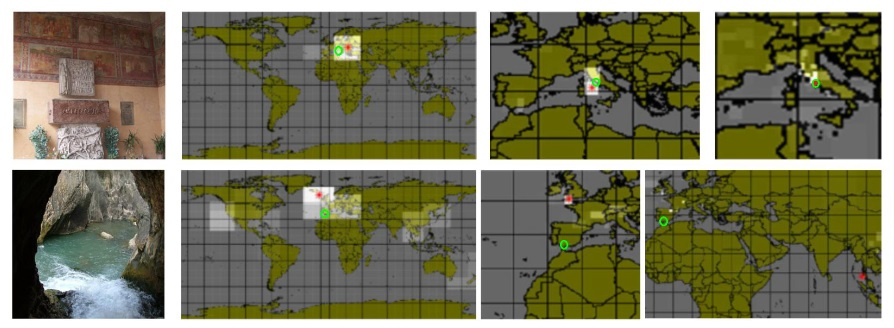
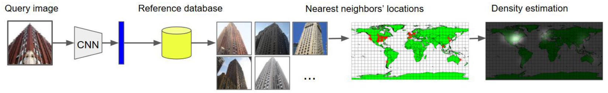
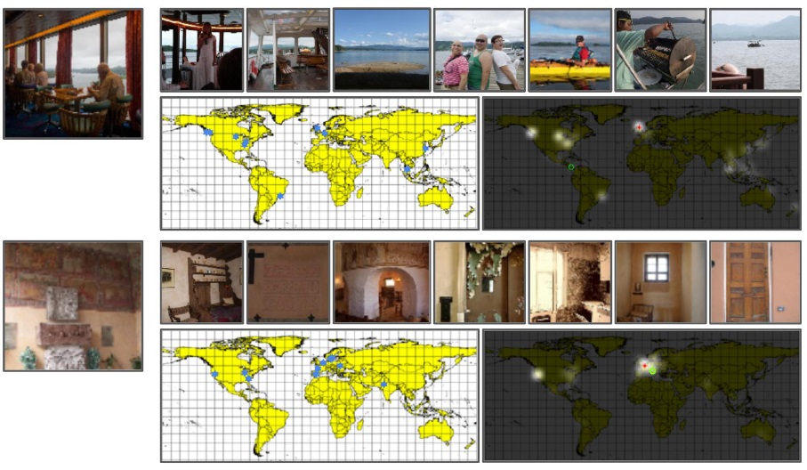
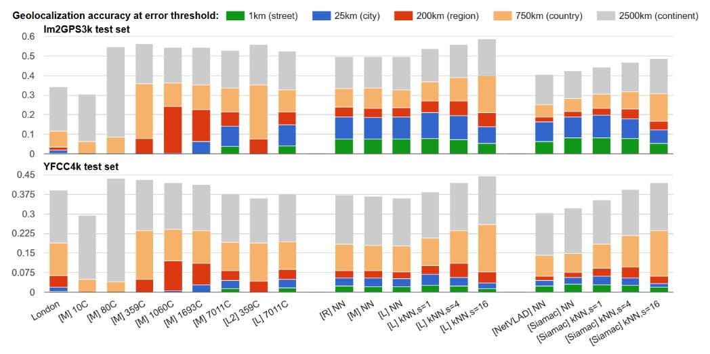

Revisiting IM2GPS in the Deep Learning Era
Nam Vo
Nathan Jacobs
James Hays
Abstract
Image geolocalization, inferring the geographic location of an image, is a challenging computer vision problem with many potential applications. The recent state-of-the-art approach to this problem is a deep image classification approach in which the world is spatially divided into cells and a deep network is trained to predict the correct cell for a given image. We propose to combine this approach with the original Im2GPS approach in which a query image is matched against a database of geotagged images and the location is inferred from the retrieved set. We estimate the geographic location of a query image by applying kernel density estimation to the locations of its nearest neighbors in the reference database. Interestingly, we find that the best features for our retrieval task are derived from networks trained with classification loss even though we do not use a classification approach at test time. Training with classification loss outperforms several deep feature learning methods (e.g. Siamese networks with contrastive of triplet loss) more typical for retrieval applications. Our simple approach achieves state-of-the-art geolocalization accuracy while also requiring significantly less training data.
Image geolocalization by image classification (PlaNet)


Image geolocalization by image retrieval (IM2GPS)


Comparison

Download